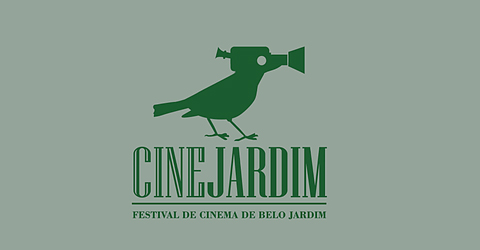

Cine Jardim
Cobertura criativa do Festival de Cinema de Belo Jardim, cidade do agreste pernambucano. 15 teasers realizados em 2 edições do evento.
Selecione o ano:
Curta na Serra 2017
Mostra de cinema ao Ar Livre
Função: Montador.
2017
Aftermovie da mostra de cinema ao ar livre realizada no distrito de Serra Negra, em Bezerros - PE.